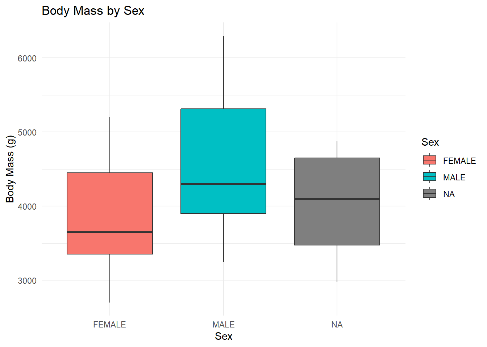
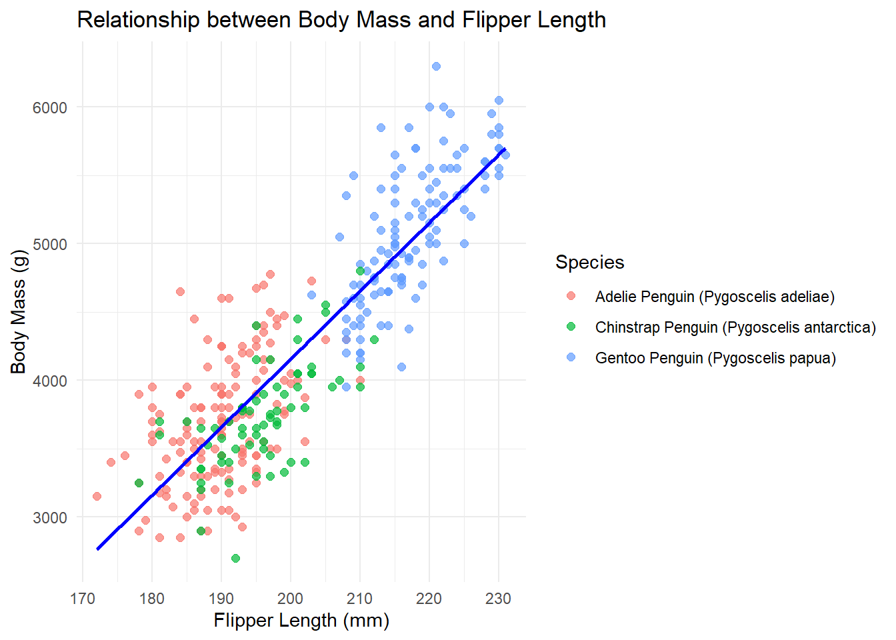

In this report, we answer three research questions related to the Palmer Penguin dataset. The dataset includes measurements of penguins from the Palmer Station, Antarctica, focusing on body mass, flipper length, sex, and species.
Research Questions:
Does sex predict body mass when controlling for species?
Is there a relationship between body mass and flipper length?
Is there a relationship between body mass and flipper length?
Hopefully by the end of project 3, I can also ask another question:
Do foraging patterns differ by species or sex?
Documented workflow
In this project it made more sense to separate cleaning our datasets and exploring them in an analysis file later. This was due to real errors we had to fix and accomdate for that would have prevented us from analyzing it to begin with. In an effort to carefully document this, notes have been left in several readmes related to these files as well as pretty specific notes within the script that explains what each command does.
By cutting the cleaning and our analysis separately I was able to create scripts that were more logicially organized and less confusing. I have created three scripts iwthin this exploratory analysis folder that is meant to help explore and answer the questions related to the data as discussed in the manuscript.
I have kept the raw data but am working with the clean data, so that we can track the changes made between them but also keep a documentation of what data was originally collected in case those corrections were unnecessary.
Analysis
Setup
This chunk loads the necessary libraries and your data:
# Load necessary librarieslibrary(here)
here() starts at /Users/marguerite/Library/Mobile Documents/com~apple~CloudDocs/Documents/git-class/students/students-2025/Project3/Bri/BriannaCorrea-Rclass-project1
library(ggplot2)library(dplyr)
Attaching package: 'dplyr'
The following objects are masked from 'package:stats':
filter, lag
The following objects are masked from 'package:base':
intersect, setdiff, setequal, union
library(car)
Loading required package: carData
Attaching package: 'car'
The following object is masked from 'package:dplyr':
recode
# Load datadata_path <-here("Data", "Processed_data", "processeddata.rds")dat <-readRDS(data_path)# Preview the datasethead(dat)
studyName Sample Number Species Region Island Stage
1 PAL0708 1 Adelie Anvers Torgersen Adult, 1 Egg Stage
2 PAL0708 2 Adelie Anvers Torgersen Adult, 1 Egg Stage
3 PAL0708 3 Adelie Anvers Torgersen Adult, 1 Egg Stage
5 PAL0708 5 Adelie Anvers Torgersen Adult, 1 Egg Stage
6 PAL0708 6 Adelie Anvers Torgersen Adult, 1 Egg Stage
7 PAL0708 7 Adelie Anvers Torgersen Adult, 1 Egg Stage
Individual ID Clutch Completion Date Egg Culmen Length (mm)
1 N1A1 Yes 2007-11-11 39.1
2 N1A2 Yes 2007-11-11 39.5
3 N2A1 Yes 2007-11-16 40.3
5 N3A1 Yes 2007-11-16 36.7
6 N3A2 Yes 2007-11-16 39.3
7 N4A1 No 2007-11-15 38.9
Culmen Depth (mm) Flipper Length (mm) Body Mass (g) Sex Delta 15 N (o/oo)
1 18.7 181 3750 MALE NA
2 17.4 186 3800 FEMALE 8.94956
3 18.0 195 3250 FEMALE 8.36821
5 19.3 193 3450 FEMALE 8.76651
6 20.6 190 3650 MALE 8.66496
7 17.8 181 3625 FEMALE 9.18718
Delta 13 C (o/oo) Comments
1 NA Not enough blood for isotopes.
2 -24.69454 <NA>
3 -25.33302 <NA>
5 -25.32426 <NA>
6 -25.29805 <NA>
7 -25.21799 Nest never observed with full clutch.
# Using the here() Function# In this project, I ended up having to learn how to use the here() function to make file paths more portable and ensure that my analysis could be easily reproduced across different environments.# Prior to using here(), I struggled with setting absolute file paths that worked consistently across different machines. The here() function allows the construction of file paths that are relative to the root directory of your project, avoiding hard-coded paths that could break when moving or sharing the project via a repo.# The here() function works by starting from the root directory of your project, which is especially useful when organizing files in subdirectories (e.g., in the Data, Code, Results folders). Instead of specifying the full path like C:/Users/yourname/..., I can use:data_path <-here("Data", "Processed_data", "processeddata.rds")dat <-readRDS(data_path)
# Penguin Analysis Script: Question 1# Create a boxplot to visualize flipper length by speciesggplot(dat, aes(x = Species, y =`Flipper Length (mm)`, fill = Species)) +geom_boxplot() +labs(title ="Flipper Length by Species", x ="Species", y ="Flipper Length (mm)") +theme_minimal()
# Save the plotggsave(filename =here("Results", "flipper_length_species_boxplot.png"))
# Levene's TestleveneTest(`Flipper Length (mm)`~ Species, data = dat)
Levene's Test for Homogeneity of Variance (center = median)
Df F value Pr(>F)
group 2 0.3207 0.7259
334
message("The ANOVA results indicate whether there is a statistically significant difference in flipper length between species. If the p-value is less than 0.05, it suggests that species differ significantly in their flipper lengths.")
The ANOVA results indicate whether there is a statistically significant difference in flipper length between species.
If the p-value is less than 0.05, it suggests that species differ significantly in their flipper lengths.
print("Script has run successfully! :)")
[1] "Script has run successfully! :)"
# Penguin Analysis Script: Question 2# Linear regressionlm_fit <-lm(`Body Mass (g)`~ Sex + Species, data = dat)# Summarysummary(lm_fit)
Call:
lm(formula = `Body Mass (g)` ~ Sex + Species, data = dat)
Residuals:
Min 1Q Median 3Q Max
-817.14 -217.75 -15.89 228.62 884.11
Coefficients:
Estimate Std. Error t value Pr(>|t|)
(Intercept) 3373.30 31.84 105.93 <2e-16 ***
SexMALE 668.11 35.20 18.98 <2e-16 ***
SpeciesChinstrap 25.74 46.82 0.55 0.583
SpeciesGentoo 1374.49 39.79 34.54 <2e-16 ***
---
Signif. codes: 0 '***' 0.001 '**' 0.01 '*' 0.05 '.' 0.1 ' ' 1
Residual standard error: 318.6 on 324 degrees of freedom
(11 observations deleted due to missingness)
Multiple R-squared: 0.8454, Adjusted R-squared: 0.844
F-statistic: 590.7 on 3 and 324 DF, p-value: < 2.2e-16
# Boxplotggplot(dat, aes(x = Sex, y =`Body Mass (g)`, fill = Sex)) +geom_boxplot() +labs(title ="Body Mass by Sex", x ="Sex", y ="Body Mass (g)") +theme_minimal()

# Save plotggsave(filename =here("Results", "body_mass_sex_boxplot.png"))
Saving 7 x 5 in image
# Save modelsaveRDS(lm_fit, file =here("Results", "body_mass_sex_model.rds"))# Levene’s testlevene_test_result <-leveneTest(`Body Mass (g)`~ Sex * Species, data = dat)print(levene_test_result)
Levene's Test for Homogeneity of Variance (center = median)
Df F value Pr(>F)
group 5 1.2636 0.2794
322
message("The regression results indicate whether sex predicts body mass when controlling for species. If the p-value is less than 0.05, it suggests that sex significantly predicts body mass.")
The regression results indicate whether sex predicts body mass when controlling for species.
If the p-value is less than 0.05, it suggests that sex significantly predicts body mass.
print("Script has run successfully! :)")
[1] "Script has run successfully! :)"
# Penguin Analysis Script: Question 3# Clean NA valuesdat_clean <- dat %>%filter(!is.na(`Body Mass (g)`) &!is.na(`Flipper Length (mm)`))# Linear regressionlm_fit <-lm(`Body Mass (g)`~`Flipper Length (mm)`, data = dat_clean)# Summarysummary(lm_fit)
Call:
lm(formula = `Body Mass (g)` ~ `Flipper Length (mm)`, data = dat_clean)
Residuals:
Min 1Q Median 3Q Max
-1058.57 -258.79 -29.17 246.82 1289.66
Coefficients:
Estimate Std. Error t value Pr(>|t|)
(Intercept) -5799.142 307.788 -18.84 <2e-16 ***
`Flipper Length (mm)` 49.780 1.529 32.55 <2e-16 ***
---
Signif. codes: 0 '***' 0.001 '**' 0.01 '*' 0.05 '.' 0.1 ' ' 1
Residual standard error: 395.1 on 337 degrees of freedom
Multiple R-squared: 0.7587, Adjusted R-squared: 0.758
F-statistic: 1060 on 1 and 337 DF, p-value: < 2.2e-16
# Scatterplot with regression lineggplot(dat_clean, aes(x =`Flipper Length (mm)`, y =`Body Mass (g)`)) +geom_point(aes(color = Species), size =2, alpha =0.7) +geom_smooth(method ="lm", se =FALSE, color ="blue") +labs(title ="Relationship between Body Mass and Flipper Length",x ="Flipper Length (mm)", y ="Body Mass (g)") +theme_minimal()
`geom_smooth()` using formula = 'y ~ x'

# Save plotggsave(filename =here("Results", "body_mass_vs_flipper_length.png"))
Saving 7 x 5 in image
`geom_smooth()` using formula = 'y ~ x'
# Save modelsaveRDS(lm_fit, file =here("Results", "body_mass_vs_flipper_length_model.rds"))message("The regression results show the relationship between body mass and flipper length. If the p-value is less than 0.05, it suggests that there is a statistically significant relationship between the two variables.")
The regression results show the relationship between body mass and flipper length.
If the p-value is less than 0.05, it suggests that there is a statistically significant relationship between the two variables.